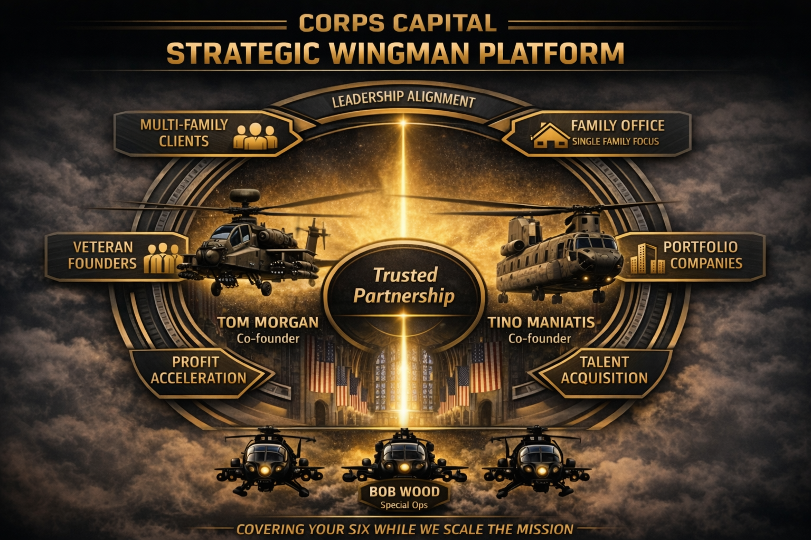

This is a plain-spoken account of what Corps Capital Advisors is, how we think about the work, and the ecosystem of people — client families, veteran founders, portfolio company leaders, and strategic partners — who make this mission possible. The platform above is not a marketing graphic. It is how we see the job.
Corps Capital is built as a formation. At the center is Trusted Partnership — the non-negotiable foundation everything else rests on. Tom Morgan and Tino Maniatis serve as co-founders, flying the lead aircraft together. Bob Wood and the Special Ops team provide the air cover behind every engagement. Around the formation sit the constituencies we serve: multi-family clients, single-family offices, veteran founders, and portfolio companies. And overhead, connecting it all, is the mission we measure ourselves against — Leadership Alignment.
Three sentences capture what we do and why. In practice they are working principles we make decisions against, sometimes every hour of the day.
We lead with the word love on purpose. The families we serve are not accounts; they are people with histories, values, children, grandchildren, worries that keep them up at night, and dreams they rarely say out loud. The job is to see all of that, hold it carefully, and build structures that carry a family forward not just through the next quarter but through the next generation — and the one after.
Most families who find us have already been through the standard playbooks. They need a partner who will sit with a messy problem — a founder-led company approaching a liquidity event, a blended family with misaligned trustees, a concentrated position with tax landmines, a next-gen heir who is not ready — and build a solution that fits the actual situation rather than the brochure. Complexity is not a threat; it is the signal we are in the right room.
This comes from West Point and it is non-negotiable. The Harder Right is the call that costs you something in the short term — a fee, a client, a comfortable silence — but protects the people you serve and the integrity of the mission. Our culture is built around naming those moments out loud.
The center of the platform is not a service or a product. It is Trusted Partnership. Everything else — the deals, the portfolios, the governance, the introductions — is downstream of whether the relationship at the center is real. Trust is the asset we underwrite first.
The platform flies with two pilots in the lead seat. If you are a client of Corps Capital, you are working directly with the founders who put their names on the door — and Tino drives the client service and follow-through that clients feel every week.
No lead aircraft operates without air cover. Bob is called in when a portfolio company or family business needs seasoned judgment on the operational problems that do not solve themselves — turnarounds, leadership transitions, strategic pivots.
Whether it is the family unit, a trustee committee, a board, or a C-suite, we help the people in charge row in the same direction. Misalignment is the silent killer of wealth and of businesses — and it is almost always the problem underneath the problem.
Trust is earned in drops and lost in buckets — by telling the truth when it is inconvenient, saying "I don't know" when we don't, and doing what we said on the timeline we said. Integrity is doing the right thing when the short-term incentives point the other way. Never Quit means still being in the seat when the turbulence hits — answering the phone, working the problem, refusing to be the one who blinks.
We cut through the noise and tell families what actually matters, in words they can repeat to their spouse and children.
We help the people in charge row in the same direction — family, trustees, or C-suite.
We build the entities, trusts, and capital stacks that let families participate intelligently and across generations.
We use modern tools deliberately to analyze, model, and stress-test — combined with human judgment.
"Covering your six" is military shorthand for watching the blind spot behind a teammate — the position they cannot see. It is the clearest statement we can make about our role for the families, founders, and leaders in our ecosystem. We are the formation on your wing, the voice in your ear when the weather turns, and the team that will not leave the engagement when it gets difficult — because the mission is worth finishing.
— Tom Morgan & Tino Maniatis, Co-Founders, Corps Capital Advisors
← Back to overview